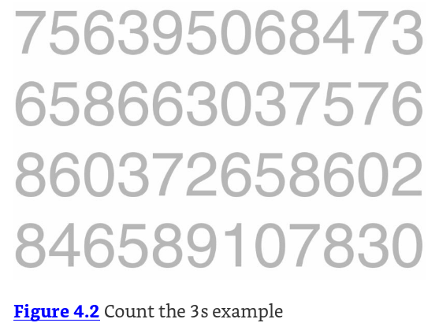

4 Highlighting Your Plots
Data4All
4.1 Preattentive attributes
Color and contrast are known as preattentive attributes. Our unconscious brain is aware of these kinds of attributes even before we consciously process the content of a graph.
How many 3s are there in this image?

4.2 How about now?
You can use color and contrast to highlight aspects of the data. How many 3s are there in this image now? Notice how much quicker you can count them.
That’s the power of preattentive attributes!

4.3 Best Practices for Using Color (Stephen Few)
- Use color only when needed to serve a particular communication goal
- Use different colors only when they correspond to differences of meaning in the data.
- Use soft, natural colors to display most information and bright and/or dark colors to highlight information that requires greater attention.
4.4 Changing the base plot (slightly)
Remember our original plot mapped color to title. There’s also a variable called status in our data. status has two different values: a tv show can be a riser (positive trend in ratings), or be a faller (negative trend in ratings).
Let’s modify the plot to use this variable to color our lines. We’ll save it as a different object, this time called my_new_plot.
In R, we map color to status, and group to title
In Python, we map hue to status, and units to title:
4.5 Highlighting part of your data
What if we only want to highlight one group in the data? In this case, maybe we want to highlight the risers in our dataset. If we color them blue, and leave the others as grey we can immediately highlight them as important and worth noticing in the context of the other data.
4.6 R
We can actually manually color our traces by using scale_color_manual(). This lets us manually map our values in our variable (riser and faller) to colors: (blue and grey).
If you’ve mapped a variable to fill, you’ll have to use scale_fill_manual() to map values to colors.
4.7 Python
4.7.1 Try out mapping colors
Try using different colors to contrast the lines in the values argument to scale_color_manual(). A small list of color names in R can be found here: https://www.r-graph-gallery.com/42-colors-names.html
4.8 Put it all together!
Cut and paste all your modifiers and make your final figure below!
If you leave out a line with a #, make sure that there is no + on your last real line.
4.9 More Best Practices for figures:
Ten Simple Rules for Better Figures: https://journals.plos.org/ploscompbiol/article?id=10.1371/journal.pcbi.1003833
4.10 More tips and tricks for using contrast and color
In 03-annotating, we saw that we can specify the line type for a particular graph. We can also specify line type as an aesthetic. Be careful with line types - too many in a figure can obscure your point.
Shapes for points can also be helpful for highlighting particular data points. Here’s a useful reference.
More information here: http://www.cookbook-r.com/Graphs/Shapes_and_line_types/
4.11 Conclusions
Congrats! You’re well on your way to learning how to make your figures more accessible.
4.12 Putting it all Together
4.13 Going Farther
4.14 ggplot2 flipbook
Good examples for styling your plots!
https://evamaerey.github.io/ggplot_flipbook/ggplot_flipbook_xaringan.html
4.15 Please fill out our survey!
4.16 References
4.17 Keep in Touch
- tladera2 at fredhutch.org
- https://laderast.github.io
- tladeras